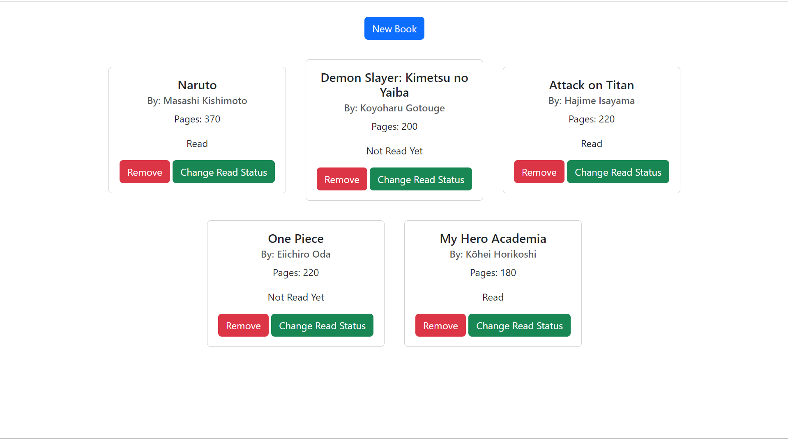
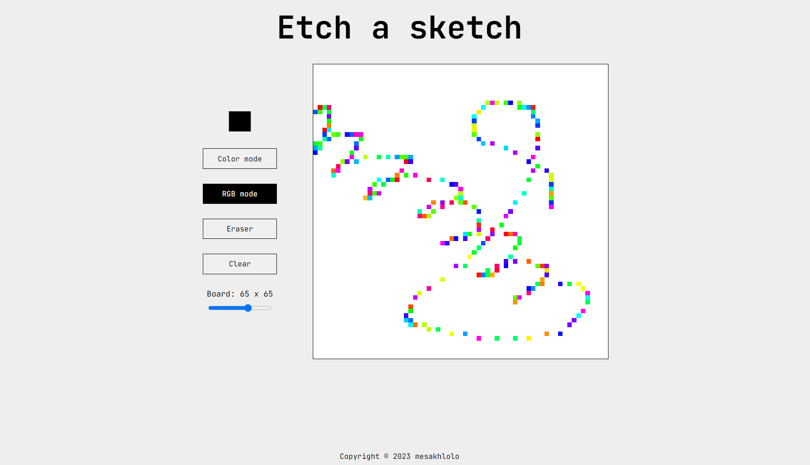

My Projects
Todo List Using React
This is a simple to-do list project that I created using React.js. This project is based on a learning tutorial I watched on the Web Dev Simplified channel. Through this project, I gained a solid understanding of the fundamental concepts of React.
View ProjectSimple Library
This is a simple library project built using vanilla JavaScript. It is part of the curriculum from The Odin Project, a free and open-source learning platform. Through this project, I gained valuable insights into objects and object constructors in JavaScript.
View ProjectEtch a sketch
This is an Etch-a-Sketch project that I created using vanilla JavaScript. It is part of the curriculum from The Odin Project, a free and open-source learning platform. Through this project, I gained valuable insights into DOM manipulation and event listeners in JavaScript.
View Project